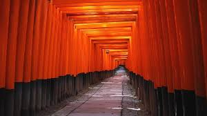

Seribu Torii Gate biasanya merujuk pada barisan gerbang torii merah yang terkenal di Jepang, terutama di Kuil Fushimi Inari Taisha di Kyoto. Torii adalah gerbang tradisional Jepang yang biasanya ditempatkan di pintu masuk atau dalam area kuil Shinto. Gerbang ini melambangkan transisi dari dunia biasa ke dunia suci.
Di Fushimi Inari Taisha, terdapat ribuan torii yang berjejer sepanjang jalan setapak menuju puncak Gunung Inari. Fenomena ini dikenal sebagai "Senbon Torii" (千本鳥居) yang berarti "Seribu Torii." Meskipun jumlahnya sebenarnya lebih dari seribu, istilah ini menggambarkan banyaknya torii yang membentuk terowongan merah yang ikonik.
booking sekarang